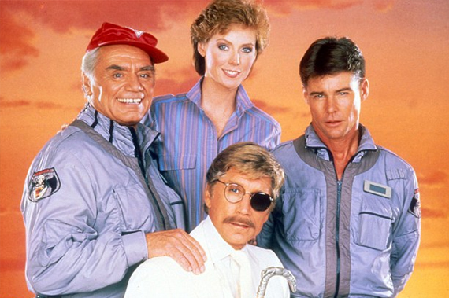
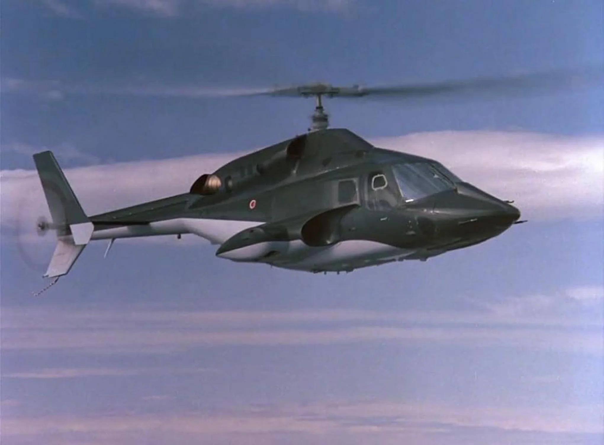
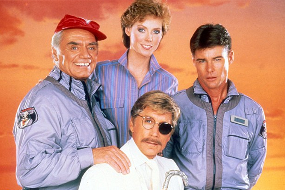
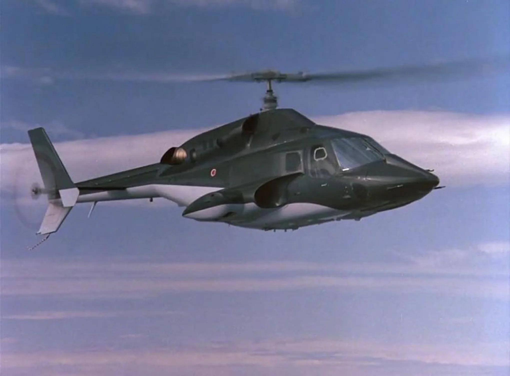

Águia de Fogo: Tecnologia, Missões Secretas e Alta Velocidade
Águia de Fogo (Airwolf) é uma série de ação e ficção lançada em 1984, criada por Donald P. Bellisario, com 4 temporadas e 79 episódios. A trama gira em torno de um helicóptero militar ultra-avançado, equipado com armamentos secretos, velocidade supersônica e tecnologia de ponta — conhecido como Águia de Fogo. O piloto da aeronave é Stringfellow Hawke (interpretado por Jan-Michael Vincent), um ex-soldado solitário recrutado por uma agência secreta do governo dos EUA para realizar missões perigosas ao redor do mundo, muitas vezes fora da lei. Ao lado de seu mentor Dominic Santini (Ernest Borgnine), Hawke enfrenta inimigos internacionais, espionagem e ameaças nucleares — tudo com o poder da aeronave mais letal da TV dos anos 80. Com trilha sonora marcante, cenas aéreas eletrizantes e clima sombrio, Águia de Fogo marcou época e se destacou por unir ação militar com tecnologia futurista. Até hoje, é lembrada como uma das séries mais estilosas e ousadas da década.
 


